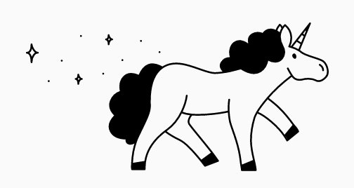
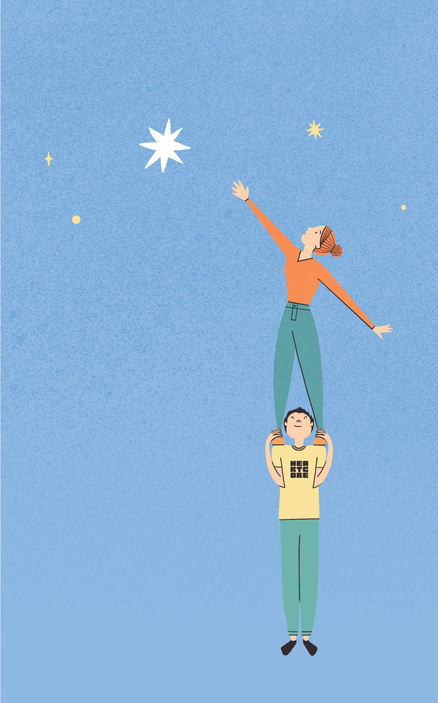

Branding
Web Design
Agency
Request
Let's create the look and feel for your future unicorn
With an idea clarity troughout digital communication

Branding for a fintech company based on Japanese technique Kumiko highlighting flexibility and craftsmenship of CMA

Showing heart and soul behind the VC fund for consumer technologies with references Le Petite Prince
Read them all
Sounds good ?
Hit us up
Send request